课程文件【男装-上身原型板】
CLO3D 项目文件 · ZPRJ · 2.1 MB
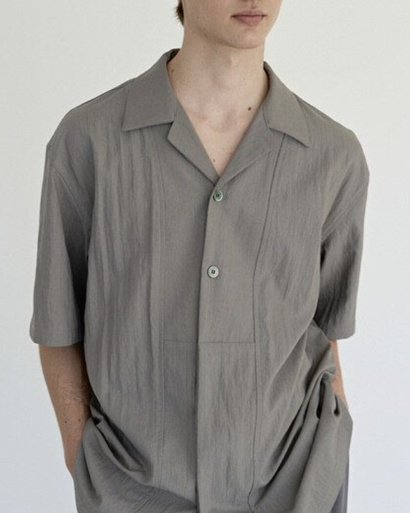
CLO3D / CHAPTER 02 · PATTERN MAKING
一起来做一件
男士衬衫吧
从男士基础版开始，转移省道的量，像用硫酸纸描图一样勾勒无省道上衣板，再切出板片、安排到模特身上并缝合模拟。跟着录屏理解每一步，设计自己的宽松衬衫版型。
准备版片与模特
从男士基础版开始
打开课程文件，里面已经有男士基础版片。先加入虚拟模特，再把版片放到模特身上对应的位置，为接下来的版型调整建立 2D 与 3D 的对应关系。
- 在「文件」菜单打开已有的男士基础版。
- 加入虚拟模特；选中板片，在 3D 窗口将它放到相应身体区域。录屏中演示了前片的安排。
接下来，开始改板片
这一步就是版型设计。录屏里的数值只是示范，不必完全照抄；理解松量从哪里收起、又在哪里打开，就能按同样的逻辑设计自己想要的衬衫。
胸省 → 领口
切出可旋转的小板片
希望领口多一点松量，就先从胸省省尖向领口切开，让这一块前片可以单独旋转。
- 按 G 使用「半片内部线」，从胸省省尖画到领口；双击结束线段。
- 选中这条内部线，右键选择「切断」。切开后得到一块可单独操作的小板片。
关闭一处 · 打开另一处
合胸省，打开领口
让原来胸省的两侧在省尖处对齐，再以省尖为中心旋转小板片。胸省收小的量，会转移到领口形成新的开口。
- 将原来的两个省道点尽量重合；拖动时按 Ctrl（Mac 按 Command）可细调位置。
- 双击旋转中心，将它移到省尖，再旋转板片。观察领口打开的宽度，按想要的松量决定旋转角度，无须照抄录屏数值。
肩省 → 领口与袖窿
为肩省转移做两处切口
前片的袖窿也需要松量。和前一步同理，以肩省省尖为起点，分别向领口与袖窿画内部线，再把两条线切开。
- 按 G，从肩省省尖向领口画线；再从同一省尖向袖窿画线。每条线双击结束。
- 分别选中两条内部线，右键「切断」，得到可围绕省尖旋转的小板片。
把松量放到想要的位置
先开领口，再转到袖窿
把切出的板片重新以肩省省尖对齐。先给领口留一点开口，再旋转左侧小板片，关闭肩省，让更多松量转移到袖窿。
- 对齐省尖，先旋转靠领口的小板片，留出少量领口松量。
- 再旋转左侧小板片，使肩省闭合，同时观察袖窿处打开的量。按希望的造型调整，不必追求录屏里的角度。
像硫酸纸一样描版
先勾勒直线轮廓
省道的量已经分配到领口和袖窿。现在在原板片上盖一片矩形，把调整后的轮廓转描到这片新板片上。
- 按 S 创建矩形，让矩形覆盖要描绘的板片；从左上角的「服装渲染类型」菜单选择「半透明表面」，使下面的原板片可见。
- 按 I 使用图示工具，依次点击原板片上相连、未被打断的直线边；按 Enter 结束。新矩形上会出现红色内部线。
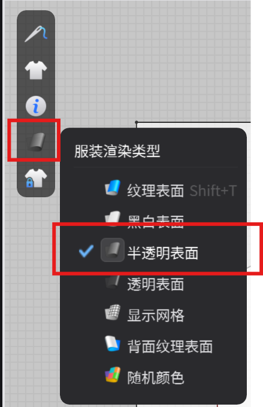
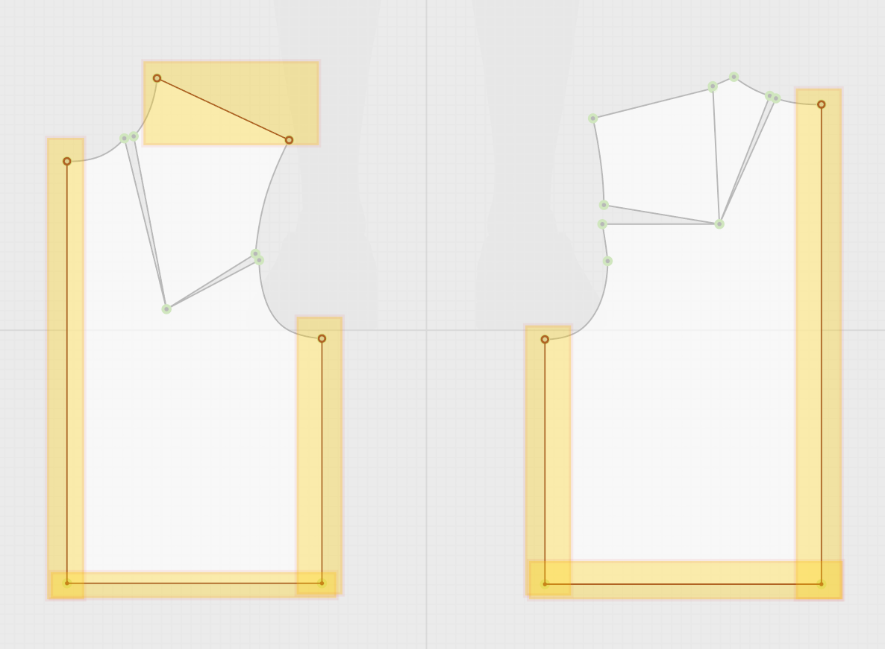
补齐领口与袖窿
画曲线，完成无省道上衣板
直线确定后，用「内部多边形／线」补画领口、袖窿等曲线。点不用很多，重点是让线条顺着原板片的弧度走。
- 按 G 选择「内部多边形／线」，沿曲线依次落点；在需要弧度的位置按住鼠标拖动，调整曲线方向。
- 视图不够用时，按住鼠标滚轮拖动画布。曲线画完按 Enter 收尾，检查前后片轮廓是否顺畅衔接。
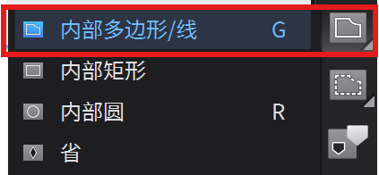
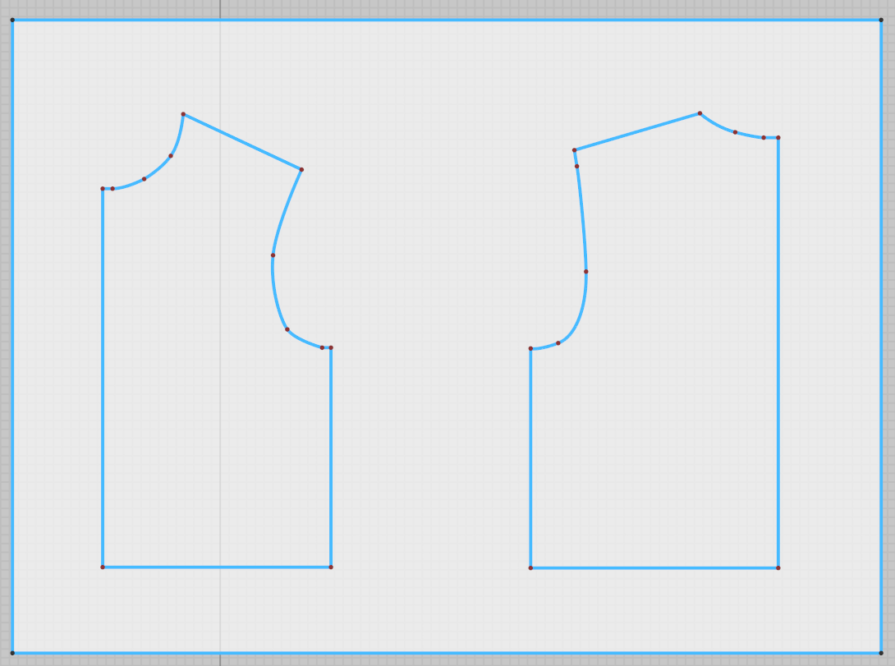
从描线到新裁片
切出无省道板片
描线完成后，旧板片只是参照。删去先前调整的板片，保留带有红色内部线的矩形，再沿新轮廓切出需要的板片。
- 删除先前调整的板片，只留下最后用于描线的矩形。
- 按 I 切换到前一步使用的工具，框选要切出的轮廓；右键选择「切断」。
- 删去矩形中多余的部分，只保留勾勒出的前后板片。
整理 2D 与 3D 工作区
对称关联，再安排到模特身上
先把新板片排整齐，再建立左右关联。3D 窗口中的安排点可以帮我们快速把板片放到模特对应的位置。
- 在 2D 工作区调整板片间距，框选前后两片；按 Ctrl／Command + D，将它们对称关联复制到另一侧。
- 打开 3D 窗口，并确认虚拟模特已开启「显示安排点」。
- 点击 2D 工作区中的一片板片，再点击模特身上对应的蓝色安排点；逐片完成安放。
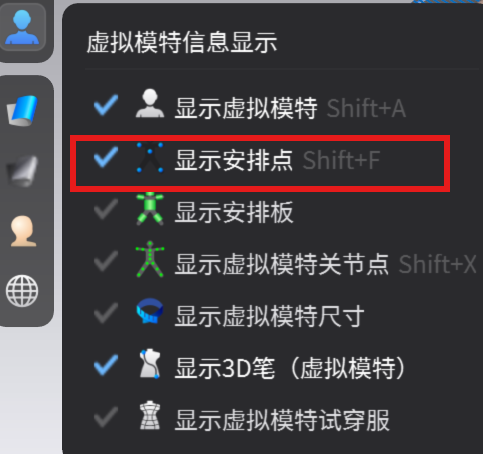
确认缝线方向
缝合板片并开始模拟
板片放好后，先建立基本的缝纫关系。缝线的起止顺序会影响模拟结果，边缝边在 3D 窗口检查彩色缝纫线。
- 按 N 选择「线缝纫」，依次点击需要连接的两条边，大致缝合侧缝、后中、肩线和前中。
- 在 3D 窗口检查彩色缝纫线的走向：对应边之间应顺直连接，不要交叉；如果交叉，先调整缝线顺序。
- 按空格键开始模拟，观察板片如何缝合到模特身上。
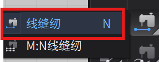
观察宽松版型
硬化板片，检查轮廓
模拟后，柔软的面料可能暂时遮住版型线条。先把板片硬化，观察宽松上衣的整体轮廓。
- 按 Ctrl／Command + A 全选板片，在 3D 窗口右键选择「硬化」。
- 转动视角检查领口、肩线、袖窿与衣身的松量，判断轮廓是否符合自己的设计。
开始处理板片细节
基本结构已经完成。接下来回到 2D 工作区，调整比例、修顺线条，并为衬衫增加门襟。
从衣身比例开始
调整衣长与宽度
先决定衬衫的长度和宽松程度。此前创建了对称关联板片，因此只需修改一侧的前片或后片，另一侧会同步变化。
- 按 Z 切换到「编辑板片」，选中要调整的边线，拖动它改变衣长或衣身宽度。
- 需要一起调整几条边时，先选中一条，再按住 Shift 继续点选其他线段。
- 在 2D 与 3D 窗口交替检查长度和围度，不必照搬视频里的尺寸。
自由调整造型
修顺袖窿、肩线和后身
这一段可以按照自己想要的廓形自由调整。视频示范了袖窿、肩线和后身的修改，重点是边调整边看 3D 效果。
- 用「编辑板片」移动点或线，调整袖窿的深度与弧度，再修肩线和后身轮廓。
- 袖窿加深、放大后，后续袖片也需要与新的袖窿尺寸相匹配；这一段还没有制作袖片。
让缝合处平顺
检查缝合端点的直角
修改曲线后，放大检查与缝合边相接的端点。端点处尽量形成直角，拼合后的轮廓才不会突然鼓出或凹进去。
- 放大袖窿与侧缝等交接处，检查端点附近的线条走向。
- 必要时移动曲线点或调整控制方向，使缝合端点接近 90°，再观察两侧拼合后的线条是否顺畅。
为纽扣留出门襟
扩张前中，制作衬衫门襟
目前左右前片在前中直接缝在一起。要制作放纽扣的门襟，先删除这条缝线，再向外扩出门襟宽度。
- 使用「编辑缝纫线」选中前中原有缝线，按 Delete 删除。
- 切换到「编辑板片」，选中前中边线；右键选择「板片外线扩张」，将间距设为 1.5 cm 后确认。
- 原来的前中线此时显示为虚线，不能直接按原缝线继续缝纫。按 I 沿这条线点击，按 Enter 结束，在扩出的板片上生成红色内部线。
让门襟正确叠合
叠好前片，再缝合内部线
门襟扩出后，先确定左右前片在 3D 中谁盖在上面，再把 2D 工作区里的两条红色内部线缝合。
- 按空格键开始模拟，轻轻调整前身片，让一侧门襟盖在另一侧上面；再次按空格键暂停。
- 回到 2D 工作区，选择两侧对应的红色内部线，建立缝纫关系。
- 重新按空格键模拟，检查门襟的叠合方向和缝合效果。
领子的制作
从领围尺寸开始
先量半圈领围，再建立对称领片，并试着缝到衣身上。量半圈，画半片
量领围并建立对称领片
领子先从领围长度推算。由于衣身左右对称，只要量一侧的前领圈和后领圈，就能得到半片领子的参考长度。
- 用「编辑板片」框选同一侧的前领圈和后领圈线。打开窗口最右侧的「属性编辑器」，查看「2D 线段长度」；示例为 24.99 cm，可取整为 25 cm。
- 按 S 选择矩形工具，在 2D 空白处双击，输入宽 25 cm、高 5 cm，确认创建半片领子。5 cm 是本次造型示例，可按设计调整。
- 选中矩形，按 Ctrl／Command + D 镜像复制关联板片；放到一旁后，用「编辑板片」选中两片的中线，右键「合并」，形成仍可对称联动的完整领片。
- 在这个基础上大致调整领子的轮廓，稍后再通过模拟检查效果。
从后中走到前中
用 M:N 自由缝连接领子与领圈
先把领子缝到衣身上，看看长度与形状是否合适。这一步的选线顺序很重要，建议跟着视频逐段点选。
- 选择「M:N 自由缝纫」。从领片中线选到一侧端点，按 Enter 确认 M 线。
- 接着选择衣身的后领圈作为 N 的第一段，再接着选前领圈作为第二段：路径是后中 → 后领圈 → 越过肩线 → 前领圈 → 前中。最后按 Enter 结束 N 线。
- 在 3D 窗口检查彩色缝纫线是否按这个方向连接；确认后选中领片，右键「硬化」，按空格键模拟。
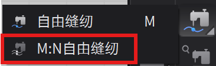
调整领片的转折
移动旋转中心，修出领圈弧度
领片缝上后，再按肩部的位置调整它的角度与下缘曲线。先找到领片一侧下角与对应方向中线的对齐位置，作为旋转基准。
- 选中领片，把一侧底角对齐到对应方向的中线；可以参考红色内部线，也可以参考最外侧的边线。
- 双击旋转中心将其激活，再把旋转中心移到刚对齐的角上。旋转领片，让领片下缘落在肩线往里约 1–2 cm 的位置。
- 用「编辑曲线点」修出领圈附近顺畅的弧线，按空格键模拟检查。
把 3D 标记带回 2D
画出领子的翻折线
先在 3D 服装上判断翻折线应该落在哪里，再把位置同步回 2D 板片，结合 2D 内部线与 3D 笔勾勒整条曲线。
- 在 3D 窗口点击预计的翻折终点；出现的蓝色点也会同步显示在 2D 板片上。按 X 在线上加点，再按 G 从该点向领圈画一段内部线。
- 选择「3D 笔（服装）」，从后中沿领子画到刚添加的线。少量点即可；双击结束，或再次点击选择工具退出。
- 切换到「编辑 3D 画笔（服装）」，选中线条，右键选择「转化为内部图形」。2D 板片上会出现对应的内部线；可用「生成圆顺曲线」再把轮廓修顺。
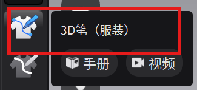
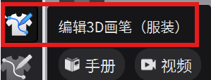
让领子翻下来
设置翻折强度并调整缝纫点
翻折线已变成领片上的内部线。为这条线设置折叠属性，再让中线缝纫点与翻折位置对齐，领子才能在模拟时自然翻下。
- 在 2D 工作区用「编辑点／线」选择需要翻折的内部线。按住 Shift 可多选线段；只需选择半边，对称关联会同步另一侧。
- 打开右侧「属性编辑器」，将所选内部线的「折叠强度」设为 100。
- 按 B 使用「编辑缝纫线」，分别选中领片中线两侧的缝纫点，向下移到与翻折点大致同一水平。点位较小，可放大视图耐心选取；两侧都要调整。
- 按空格键模拟，在 3D 工作区轻轻调整领子，检查翻折后的形状。
袖子的制作
从袖山到上身试穿
先定袖山高度，粗画袖山弧线，再把袖片缝到衣身的袖窿上。先定袖山高度
用矩形建立袖片基础
先用一个正方形确定袖片的大致范围。上边线中点向上移动的距离，就是这次的袖山高。
- 按 S 选择矩形工具，在 2D 工作区双击，输入宽 50 cm、高 50 cm。
- 按 X 在矩形上边线中间加点，即距两端各 25 cm 的位置。
- 按 Z 选择「编辑板片」，将中点向上移动约 10–15 cm。我们要做宽松袖子，先用这个范围作为袖山高，再根据试穿效果调整。
- 按 Z 并按住 Shift 多选同一侧前袖窿的几段线，在「属性编辑器」查看合计长度；后袖窿同样测量。对照前、后袖窿长度，移动袖山两侧的点，分别调整袖山前段与后段的弧长。
先画出大致弧度
增加曲线点，画出袖山
袖山不必一次画得很精细。先从中点向两边建立顺畅的弧线，之后再根据袖窿和模拟结果修整。
- 按 V 使用「编辑曲线点」，在袖山两侧大致各增加一个曲线点。
- 添加点时就可以顺手拉出曲线，先画出袖山的基本形状，不必把点加得太密。
先试缝再调整
缝合袖片并连接袖窿
袖山画好后，先把袖片缝成筒，再与衣身袖窿连接，放到模特身上检查。可以选用自己熟悉的缝纫工具。
- 先缝合袖片两侧的侧缝，再依次将袖山边与衣身袖窿拼接。
- 注意前后方向：先确认哪一侧对应前袖窿、哪一侧对应后袖窿，再检查 3D 窗口的彩色缝纫线是否交叉。前面量过袖窿长度，也可用来核对缝合范围。
- 按空格键模拟，让袖片落到模特手臂附近，再根据试穿效果继续调整。
先确认袖长
让模特双臂回到身侧
袖子穿上后，换一个手臂自然下垂的姿势，更容易判断袖长。
- 在模块库的模特文件夹中寻找 POSE 文件，双击 Attention 姿势；模拟后模特双手会回到身体两侧。若模块库未显示该文件，也可从源文件夹打开。
- 从正面和侧面检查袖口落点，再按想要的长度调整袖片。
袖肥调整 · 方法一
直接移动袖口两侧的点
最直接的方式是在 2D 板片上改变袖子下摆宽度。
- 按 Z 选择「编辑板片」，选中袖片底部的点，向内或向外移动，观察袖肥的变化。
袖肥调整 · 方法二
用延展板片点建立调整线
这种方式更接近实体打板：先从袖山向下建立垂直参考，再移动袖片外侧。
- 选择「延展板片（点）」，在袖山弧线上点击一处，向下拉出垂直线，直到碰到袖片底边。
- 选择袖片外侧蓝色高亮的区域，向内朝袖片中线移动，收窄袖肥。
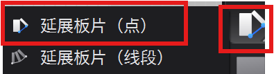
袖肥调整 · 方法三
提高袖山，再重新配平弧线
还可以通过袖山高改变袖子的形状，但袖山弧长也会跟着变化，需要同时检查缝合长度。
- 将袖片上方中点向上移动约 1–3 cm，观察袖山线如何变长。
- 对应移动袖山两侧的点，缩短并重新配平前、后袖山弧长，使它们继续匹配衣身袖窿。
- 最后移动袖片底部两侧点，调整袖口宽度，再模拟检查。
袖克夫的制作
从袖口尺寸到褶量分配
先做袖克夫并试穿，再计算袖口与克夫的差量，标出褶子位置。先建立袖口板片
创建并安排袖克夫
先用矩形做出袖克夫的大致大小，再借助 3D 安排点放到模特手腕附近。
- 按 S 创建矩形：宽约 24–26 cm，高约 5–6 cm。尺寸是起点，试穿后仍可调整。
- 打开 3D 窗口的「显示安排点」，选中袖克夫板片并点击手腕附近对应的安排点。
先看立体效果
缝合袖克夫并试穿
先把袖克夫的短边接成环，暂时让袖片停止参与模拟，并硬化克夫，观察其围度和高度。
- 缝合袖克夫两侧的短边。选中袖片，右键选择「反激活」（Ctrl + J）。
- 在 3D 窗口选中袖克夫并「硬化」（Ctrl + H），按空格键模拟。
- 检查袖克夫是否太宽、太窄或太高，再回 2D 工作区修改矩形尺寸。
把袖口差量分给褶子
计算并标记三个褶子
袖片底边通常比袖克夫长，缝合前可用褶子收掉差量。本例袖口 37 cm、克夫 24 cm，差 13 cm；若每褶收 4 cm，约做 3 个褶子。
- 计算：37 − 24 = 13 cm，13 ÷ 4 ≈ 3.25，先规划 3 个各收约 4 cm 的褶子。这样共收 12 cm，剩余约 1 cm 可均匀分配，或略调每个褶量，使最终缝合长度匹配。每褶可按设计在约 3–4.5 cm 范围调整。
- 按 G 画袖中线，双击或按 Enter 结束。按 Z 选中袖底边的空心点，右键选择「生成垂直内部线段 → 选择线段」，得到与底边垂直的参考线。
- 按 X 在袖底边加点；需要精确位置时，选中线段后右键打开「分割线」，输入距离再确认。先在袖中线两侧各放一个距中线 2 cm 的点，再分别向外量 4 cm；第三个褶子可在后侧再隔约 2 cm 后标出 4 cm，间隔也可按造型调整。
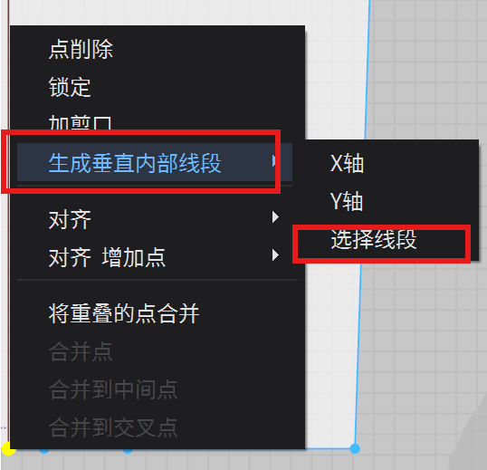
从袖口标点向上画
画出三个褶子的折线
上一节标出了三个褶子的起止点。现在为每个标点画一条向上的内部线，再在每个 4 cm 褶量中间补一条折线。
- 按 G 使用「内部多边形／线」，从袖口各个标点向上画约 10–15 cm 的内部线。右键可打开「内部图形／线」窗口，输入长度并确认；图中的 10.33 cm 只是示例。
- 每个褶子的两条边界线画好后，在这段 4 cm 的中点，也就是距两边各 2 cm 的位置，再画一条同方向的中线。三个褶子都这样处理，便于下一步对称折叠。
- 对照示意图检查 A、B、C 三组线：每组 4 cm，按 2 cm + 2 cm 分开；线长可随设计调整，保持同组折线长度大致一致。
让折线带动袖口
设置褶子的折叠角度
按示意图给同一类折线设置相同角度。先设置三条中线，再设置对应的侧边线，褶子就会沿内部线折起。
- 用「编辑点／线」点击每个 4 cm 褶子中间的内部线，按住 Shift 多选三条。打开右侧「属性编辑器」，把「折叠角度」设为 360°。对照下方黄色高亮线段。
- 再选择示意图中橘红色高亮的三条侧边折线，把「折叠角度」设为 0°。注意选的是标出的折线，不是整组的所有边界线。
- 设置后褶子会自动叠起；2D 视图里变化可能不明显，可切到 3D 窗口检查袖口方向和褶子的层次。
把折线缝成褶子
用自由缝纫固定三个褶子
按图中绿色区域，分别把每个褶子的对应线段缝在一起。红色圆圈、三角形和方形表示各自应配对的线段。
- 按 M 使用「自由缝纫」，逐组缝合三个褶子标出的对应线段。每完成一组，就对照示意图检查配对与缝纫方向。
- 如果像本例一样，在两个褶子之间留了 2 cm 的间隔，这一段保留原样，不要缝合。
- 按空格键模拟。若褶子皱成一团，可在 3D 窗口抓住褶子中线附近的面料，轻轻向下拉或晃动，帮助布料展开并落到正确方向。
从袖口后侧开始
规划开叉与宝剑头
袖口开叉通常安排在手臂后侧。先在 3D 窗口判断位置，再回到 2D 袖片上画内部线，建立宝剑头的轮廓。
- 在 3D 服装上找出手臂后侧的开叉位置。按 G 使用「内部多边形／线」，从袖口向上画约 10 cm 的线；需要精确长度时，右键打开数值窗口输入。
- 按 Z 选中这条线，右键选择「内部线间距」。将「扩张数量」设为 2、「间距」设为 1.25 cm；勾选「两侧」，关闭「内部线延长」，确认后得到两条平行线。
- 在开叉顶端向上再延长约 1–2 cm，按 G 画一个小三角，形成宝剑头的尖端轮廓。图中的衬衫袖口是完成后的造型参考。
把内部线变成独立板片
提取宝剑头并调整袖克夫
在三角形下方补上横线，闭合宝剑头的外轮廓；勾勒为独立板片后，再用它的底边宽度确定袖克夫需要加出的量。
- 按 G 使用「内部多边形／线」，在三角形下方连接左右两条线，补出一条横线，形成图示的宝剑头轮廓。
- 按 I，按住 Shift 多选宝剑头外轮廓的各段线；右键选择「勾勒为板片」，提取独立板片。完成后可删除不再需要的中线。
- 量取宝剑头底边。本例为 2.5 cm；宝剑头宽度约 2–3.5 cm 均可按设计调整。底边的一半是 2.5 ÷ 2 = 1.25 cm。
- 选中袖克夫对应的一条边，向外延长 1.25 cm，使这部分宽度与宝剑头底边的一半相对应，便于后续缝合。若宝剑头用了其他宽度，就按实际底边的一半计算。
先打开袖片的开叉
把宝剑头板片缝到袖片上
独立宝剑头板片已做好。先沿袖片的开叉中线切开，再按图中颜色对应两侧轮廓，分段建立 M:N 自由缝纫关系。
- 按 Z 选中袖片上的开叉中线，右键选择「切断」，让原先的内部线成为真正的开口。
- 使用「M:N 自由缝纫」，按图把宝剑头板片的绿色边段与袖片上对应的蓝色边段依次配对。完成 M 侧的线段选择后按 Enter；完成 N 侧的选择后也按 Enter，结束这一组缝纫。
- 对照 3D 窗口的缝纫指示线检查顺序；若线条交叉，先回到 2D 核对对应边，再模拟。
在 3D 中整理层次
将宝剑头添加到外面并模拟
缝纫关系确认后，让宝剑头板片位于袖片外层，再硬化并模拟，观察袖口开叉的立体效果。
- 在 3D 窗口选中宝剑头板片，右键选择「添加到外面」（Ctrl + [）。板片会自动贴到袖片外侧。
- 保持选中，右键选择「硬化」（Ctrl + H），帮助宝剑头在模拟时维持形状。
- 按空格键模拟，检查宝剑头是否覆盖在开叉外面，以及袖口开口是否顺畅。
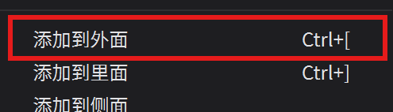
按边段顺序连接袖口
将袖克夫缝到宝剑头和袖片上
这次用「M:N 自由缝纫」把袖克夫的一条边，依次接到宝剑头和袖片的六段有效边上。已经收进褶子里的 A、B、C 段要跳过，不参与这条缝纫。先看下方两张图，再按数字顺序操作。
- 选择「M:N 自由缝纫」。M 侧只选袖克夫的一整段上边线，按 Enter 结束 M 侧。
- N 侧按图 1 的数字 1 → 2 → 3 → 4 → 5 → 6，依次选择宝剑头与袖片的对应边段；本例做了三个褶子，所以共有六段。选完后按 Enter 结束 N 侧。图上数字表示点击顺序，不是从左到右依次点。
- 图 2 中 A、B、C 三组各 4 cm 是之前已经折入的褶量。这些线段不要再与袖克夫缝合，否则会把褶子展开或缝错。
- 核对 3D 窗口的缝纫线走向。必要时重新安排板片位置，再按空格键模拟；在 3D 中轻轻拖拽布料，把褶子整理平顺。第一次尝试若效果不理想，逐段检查顺序并慢慢调整。
完成另一侧袖子
关联复制袖片与袖克夫
先检查已经完成的袖子、褶子、开叉和袖克夫。确认形状与缝纫关系后，再把整组复制到另一侧。
- 在 2D 板片区域框选整个袖片与袖克夫，确认相关板片都被选中。
- 按 Ctrl/Command + D 进行「关联复制」，把整组放到另一侧，再到 3D 窗口确认位置。
添加服装细节
调整面料与纽扣
版型确定后，调整面料外观，再在需要的位置添加纽扣。尝试不同的面料外观
关闭硬化并调整面料属性
所有板片都安排好后，先关闭为了制作而开启的硬化，再进入面料属性。这里的参数可以根据自己想要的衬衫效果尝试调整。
- 按 Ctrl/Command + A 全选板片，在 3D 窗口右键关闭「硬化」。
- 打开最右侧竖排的「物体窗口」，点击面料列表中的面料，让该行出现蓝色高亮边框。
- 打开下方「属性编辑器」，查看面料的颜色、材质等参数，按自己的设计调整并在 3D 窗口观察效果。
开始添加服装配件
在板片上放置纽扣
在 3D 窗口的工具栏选择「纽扣」，再回到 2D 工作台，在需要的位置单击板片，即可添加一个纽扣。按设计继续放置其他纽扣，并在 3D 中检查位置。
先选中要编辑的纽扣
打开纽扣的属性面板
- 使用「选择纽扣」工具选中板片上的纽扣，同时打开右侧的「物体窗口」和「属性编辑器」。
- 在「物体窗口」的纽扣列表中点击该纽扣；出现蓝色高亮后，便可以在「属性编辑器」中调整参数。展开「图形」可更换纽扣的样子。
按衬衫比例微调
调整纽扣的尺寸和颜色
本例原来的纽扣宽度为 2 cm，在这件衬衫上显得偏大，因此改为 1.5 cm。你可以按自己的版型和视觉效果选择尺寸，再在属性面板中修改颜色。
让门襟纽扣排列整齐
复制并设置纽扣间距
- 保持使用「选择纽扣」工具，缩小 2D 工作台视图，直到能看到整块衬衫前片；选中准备复制的纽扣。
- 按 Ctrl/Command + C 复制，再按 Ctrl/Command + D 进入粘贴放置状态。此时先不要点击鼠标，复制出的纽扣仍可移动。
- 按住 Shift 让移动方向保持垂直向下，再点击鼠标右键打开「粘贴」参数面板。输入需要的「间距」和「扣子/扣眼数量」，确认后检查门襟上的排列。图中的数值只是示例。
为门襟配上扣眼
复制纽扣并转换成扣眼
- 保持使用「选择纽扣」工具，在 2D 工作台框选整排纽扣，右键选择「复制到对称修改的板片」。
- 判断衣服合拢时哪一侧门襟在上方。框选这一侧复制出的纽扣，右键选择「转化为扣眼」。
- 按空格键模拟，检查纽扣与扣眼是否自动扣合；个别纽扣可能没有顺利穿过扣眼，下一步可以单独调整。
逐个检查扣合位置
移动没有穿过扣眼的纽扣
- 先按空格键暂停模拟，保持使用「选择纽扣」工具，在 2D 工作台选中没有扣上的纽扣。
- 在 3D 窗口找到对应的交互点，拖拽纽扣到扣眼所在板片的上方，让两者重新对齐。
- 再次按空格键模拟，查看这颗纽扣是否穿过扣眼；其他没有扣上的位置可以照此逐个处理。
沿用纽扣的编辑方法
调整扣眼的尺寸和颜色
- 打开右侧的「物体窗口」和「属性编辑器」，在物体窗口的小菜单中点击「扣眼」图标。
- 双击列表中的扣眼，使该项显示蓝色高亮；随后在属性编辑器中修改扣眼的尺寸和颜色。可以按衬衫的设计继续微调。
先打开袖克夫的侧边
删除袖克夫之间的缝纫线
- 继续处理袖克夫的纽扣。先暂停模拟，在 2D 工作台使用「编辑缝纫线」工具，选中袖克夫两端原先缝在一起的缝纫线。
- 按 Delete 删除这条缝纫线，让袖克夫的两端重新分开，给纽扣和扣眼留出开合位置。
确认两侧后再扣合
添加并系好袖克夫纽扣
- 先在 3D 窗口点击袖克夫，确认左右两侧和穿着时的重叠方向。使用「纽扣」工具，在一侧袖克夫上添加纽扣。
- 把纽扣复制到对应的另一侧，再将复制出的纽扣转化为扣眼。检查每颗纽扣与扣眼是否一一对应。
- 这一步需要耐心：使用「系纽扣」工具，依次点选对应的纽扣和扣眼，将它们连接起来。随后在 3D 窗口调整袖克夫，让一侧穿到另一侧并扣合。
- 操作较久时，可以先框选大身片并「冷冻」，减少布料干扰；袖克夫扣好后，再解除冷冻并模拟检查。
边模拟边观察变化
尝试面料的物理参数
在「物体窗口」选择面料图标并选中面料，然后打开「属性编辑器」中的「物理属性」。这里可以尝试调整面料的手感和挺度，例如让面料更硬。保持模拟开启，在 3D 窗口观察每次调整带来的变化，再选择喜欢的效果。
调用电脑上的面料文件
从面料文件夹替换板片面料
- 如果电脑里已经安装面料文件，打开「物体窗口」的面料菜单，点击列表旁的小文件夹图标，浏览可用面料。不同电脑和版本显示的文件可能不同。
- 添加想用的面料后，在 2D 工作台框选目标板片，也可以全选。将物体窗口中的面料拖到选中的板片上，再到 3D 窗口检查外观。
渲染和拍摄
从模拟到服装图像
进入渲染前，先保存 CLO 工程文件，避免闪退或误操作造成进度丢失。整理服装后，再进入渲染面板。先检查成衣状态
整理衬衫并打开渲染
- 在模拟速度菜单切换到「试穿（面料属性计算）」档位，再轻轻整理领子、门襟、袖口等细节。示例没有逐处精修，大家可以按自己的成品要求继续调整。
- 确认衬衫形状后暂停模拟。本例移除了虚拟模特，只渲染服装；如果希望展示穿着效果，也可以保留模特。
- 从顶部菜单选择「渲染 → 渲染」，进入渲染工作区。
观察画面与渲染状态
调整视角并选择渲染设备
- 进入渲染工作区后，渲染视角与 3D 窗口的视角对应。生成画面时可能会有短暂卡顿；下方蓝色状态条会显示编译或渲染进度。
- 如果在左侧 3D 窗口改变了视角，点击渲染窗口中的「同步渲染」图标，刷新渲染画面。
- 如果电脑有可用的 GPU，可以打开「渲染编辑器」的「属性编辑器」，在「渲染工具」中选择 GPU（如图中的 GPU CUDA）并启用相应选项，以尝试加快渲染。可用设备会因电脑而异。
试试不同的拍摄效果
调整相机、灯光和背景
渲染窗口左侧的三个设置图标分别通向图像、相机和灯光相关参数。选择图标后打开「属性编辑器」，可以逐项尝试不同效果；例如在「图片/视频属性」里修改背景颜色。
检查画面后导出
保存当前渲染图片
- 继续尝试渲染参数，直到视角、背景与服装效果符合自己的想法。若已删除模特并只留下服装，保持当前状态，不要再按空格键启动模拟，以免服装失去支撑后下坠。
- 画面确认后点击「保存当前图片」，选择桌面或需要的文件夹保存渲染图。
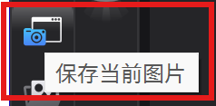
交付前逐项核对
作业清单
点击方框记录自己的完成情况；勾选会保存在当前浏览器中。
在 5 项必备结构之外，加入其他服装细节或个人设计，可以获得附加分。
CLO 工程文件和最终渲染图片分别保存。确认图片文件已写入所选文件夹后，就完成了这次衬衫制作与展示。
← 返回 Learn 书架